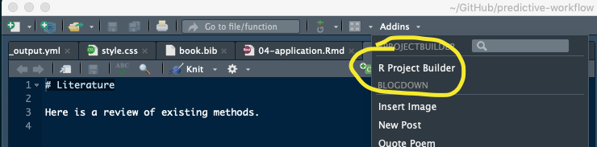

bllFlow is an R package to support the Big Life Lab approach of developing predicitve algoirhtms.
Installation
# Install from GitHub
# f not installed, install the devtools
install.packages("devtools")
# then, install the package
devtools::install_github("Big-Life-Lab/bllFlow", auth_token="75bdffc4a195fbc11ffccb546707030a8361d7de",
ref="master")Documentation
1) Package documentation in pkgdown format is here. See the pkgdown README for instructions about how to build and contribute to the pkgdown document.
2) You can see bllFlow in action here
RStudio Plugin Installation
- Restart the IDE
- If the plugin was successfully installed there should be a new entry in the Addins menu at the top of the IDE called “R Project Builder”

Plugin Usage
- Open the project’s ‘Model Specification Worksheet (MSW)’ (CSV file).
- Run the plugin.
- The generated project should be in a folder called “generated-project” within the folder containing the web specifications file.
The package requires a MSW CSV file that identifies:
- Which variable you would like transformed.
- Which transformation you would like performed.
code example here to load and create a table output....
Links
- Browse source code at
https://github.com/Big-Life-Lab/bllFlow - Report a bug at
https://github.com/Big-Life-Lab/bllFlow/issues
Developers
- Yulric Sequeira
Author, maintainer - Doug Manuel
Author
(0000-0003-0912-0845) - Meltem Tuna
Author